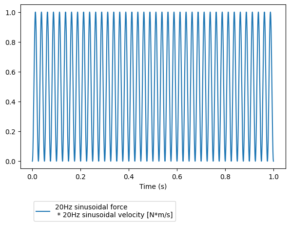

Tutorial 1 : The Signal class
The measpy.signal.Signal class describes a sampled temporal signal. It is at the core of the measpy.Measurement class, which helps in performing data acquisition with various daq cards.
An object of the class Signal is described by the following properties:
A sampling frequency
fsA physical unit
unit(optionnal)A calibration
calin unit per Volt (if the signal comes from an DAQ acquisition) (optionnal)A multiplicative constant
dbfswhich express the voltage amplitude for which the acquired data equals 1 (one). This is a classical quantity when acquiring signals with audio cards, but can be ignored and kept at 1.0 with most data acquisition cards. (optionnal)A numpy array
_rawvalues, which corresponds to the raw data given by the digital acquisition process.A description
desc(a string that describes the signal)A time shift
t0(optionnal)Any other property can be added to a
Signalobject. It is saved and restored by the file management methods of this class.
Let’s first import the measpy module, as well as numpy:
#This is here in case we want to use the local measpy directory
import sys
sys.path.insert(0, "..")
import measpy as mp
import numpy as np
1. Basics
Let us create a signal S with a sampling frequency of 44100 Hz.
If unit, calibration and dbfs are not specified they are defaulted to dimensionless, 1.0 and 1.0 respectively. And if no content is given the samples doesn’t exist and _rawvalues equals None.
S = mp.Signal(fs=44100)
print(S)
print(S._rawvalues)
measpy.Signal(desc='A signal',
fs=44100,
_rawvalues=[],
)
[]
As such, the above signal isn’t very useful. Let us give to it some content, for instance a sinusoid at the frequency 100Hz of duration 1 second. raw property is a shortcut (@setter,@getter) for the property _rawvalues.
S.raw = np.sin(2*np.pi*20*np.arange(0,1,1/S.fs))
S.desc = 'A sinusoidal signal at 20Hz'
print(S.raw)
print(S._rawvalues)
[ 0. 0.00284951 0.005699 ... -0.00854845 -0.005699
-0.00284951]
[ 0. 0.00284951 0.005699 ... -0.00854845 -0.005699
-0.00284951]
Note that using S._rawvalues instead of S.raw would lead to the same result. More precisely the actual array is S._rawvalues, and S.raw is a shortcut (a @setter/@getter method).
Now that it contains data, the signal can be plotted.
S.plot()
<Axes: xlabel='Time (s)'>

All what we have done before could be performed in one step at the initialization phase, as below.
samplingfreq = 44100
S = mp.Signal(fs=samplingfreq,desc='20Hz sinusoidal signal',raw=np.sin(2*np.pi*20*np.arange(0,1,1/samplingfreq)))
S.plot()
<Axes: xlabel='Time (s)'>

Even better, there is the sine method of the class Signal:
S = mp.Signal.sine(freq=20,dur=1,fs=44100,amp=1)
There is a lot of additionnal properties for the signal. For instance, the duration and the time vector. These properties are not stored in memory. When asked for, they are calculated based on the number of samples in the signal, as in the example below:
print(S.time)
print(S.dur)
[0.00000000e+00 2.26757370e-05 4.53514739e-05 ... 9.99931973e-01
9.99954649e-01 9.99977324e-01]
1.0
2. Units
Let us now give a physical unit to this signal. Consider for instance that it is a velocity, in meter per second. In order to create such signal we have to additionnally specify the unit optionnal argument:
velsig = mp.Signal.sine(fs=samplingfreq,freq=20.0,desc='20Hz sinusoidal velocity',dur=1.0,unit='m/s')
Consider a second signal, for instance a force in Newtons (N), in phase with the velocity. It is created in the same way:
forcesig = mp.Signal.sine(fs=samplingfreq,freq=20.0,desc='20Hz sinusoidal force',dur=1.0,unit='N')
These two signal can be multiplied together, giving an instantaneous power!
power = forcesig * velsig
power.plot()
<Axes: xlabel='Time (s)'>

Note that by default, the units are simply multiplied together. It is however possible to ask for a standard unit of the same dimension for this signal. The below command will convert the signal to the standard unit for power (which is Watt)
power = power.unit_to_std()
print(power)
measpy.Signal(fs=44100,
unit=W,
desc='20Hz sinusoidal force
* 20Hz sinusoidal velocity
-->Unit to W',
freq=20.0,
_rawvalues=[0.00000000e+00 8.11972599e-06 3.24786402e-05 ... 7.30759516e-05
3.24786402e-05 8.11972599e-06],
)
The similar method makes a copy of the Signal object and modifies its properties specified in its arguments. Using this method, we can do the same as before and change the description at the same time.
power = (velsig*forcesig).unit_to_std().similar(desc='The power given to the system')
print(power)
measpy.Signal(fs=44100,
unit=W,
desc='The power given to the system',
freq=20.0,
_rawvalues=[0.00000000e+00 8.11972599e-06 3.24786402e-05 ... 7.30759516e-05
3.24786402e-05 8.11972599e-06],
)
Conversely to multiplication, in order to perform an addition, the signals have to be of compatible physical units. We cannot add force and velocity! The below command should raise an Exception.
forcesig+velsig
---------------------------------------------------------------------------
Exception Traceback (most recent call last)
Cell In[13], line 1
----> 1 forcesig+velsig
File ~/Documents/python/measpy/examples/../measpy/signal.py:1176, in Signal.__add__(self, other)
1170 """Add something to the signal
1171
1172 :param other: Something to add to
1173 :type other: Signal, float, int, scalar quantity
1174 """
1175 if type(other) == Signal:
-> 1176 return self._add(other)
1178 if (type(other) == float) or (type(other) == int) or (type(other) == complex) or isinstance(other, numbers.Number):
1179 # print('Add with a number without unit, it is considered to be of same unit')
1180 return self._add(
1181 self.similar(
1182 values=np.ones_like(self.values)*other,
1183 desc=str(other)
1184 )
1185 )
File ~/Documents/python/measpy/examples/../measpy/signal.py:1155, in Signal._add(self, other)
1146 """Add two signals
1147
1148 :param other: Other signal to add
(...)
1151 :rtype: Signal
1152 """
1154 if not self.unit.same_dimensions_as(other.unit):
-> 1155 raise Exception('Incompatible units in addition of sginals')
1156 if self.fs != other.fs:
1157 raise Exception(
1158 'Incompatible sampling frequencies in addition of signals')
Exception: Incompatible units in addition of sginals
Added signals can have different dimensions if they are compatible. Let us create a signal in meter, a signal in decameter, add them, and finally plot the resulting signal.
distance1 = mp.Signal(fs=samplingfreq,desc='A length',raw=np.sin(2*np.pi*100*np.arange(0,1,1/samplingfreq)),unit='m')
distance2 = mp.Signal(fs=samplingfreq,desc='Another length',raw=np.sin(2*np.pi*120*np.arange(0,1,1/samplingfreq)),unit='dam')
distancetot = distance1+distance2
distancetot.plot()
<Axes: xlabel='Time (s)'>

When performing addition of signals, the final unit is that of the first operand. That’s why we get meters in the above calculation. If we switch the signals, we get the same thing, but in decameters…
distancetot = distance2+distance1
distancetot.plot()
<Axes: xlabel='Time (s)'>

We might want to convert this to millimeters… There is a method for that.
distancetot.unit_to('mm').plot()
<Axes: xlabel='Time (s)'>

Any operation on signals necessitates that the operands are signals of same length and frequency. For instance, consider a for signal of different sampling frequency, and try to add it to the previous force signal. This should give us an error.
samplingfreq2=48000
forcesig2 = mp.Signal.sine(fs=samplingfreq2,freq=20.0,dur=1.0,desc='100Hz sinusoidal force at fs=48000Hz',unit='N')
forcetot = forcesig+forcesig2
---------------------------------------------------------------------------
Exception Traceback (most recent call last)
Cell In[17], line 3
1 samplingfreq2=48000
2 forcesig2 = mp.Signal.sine(fs=samplingfreq2,freq=20.0,dur=1.0,desc='100Hz sinusoidal force at fs=48000Hz',unit='N')
----> 3 forcetot = forcesig+forcesig2
File ~/Documents/python/measpy/examples/../measpy/signal.py:1176, in Signal.__add__(self, other)
1170 """Add something to the signal
1171
1172 :param other: Something to add to
1173 :type other: Signal, float, int, scalar quantity
1174 """
1175 if type(other) == Signal:
-> 1176 return self._add(other)
1178 if (type(other) == float) or (type(other) == int) or (type(other) == complex) or isinstance(other, numbers.Number):
1179 # print('Add with a number without unit, it is considered to be of same unit')
1180 return self._add(
1181 self.similar(
1182 values=np.ones_like(self.values)*other,
1183 desc=str(other)
1184 )
1185 )
File ~/Documents/python/measpy/examples/../measpy/signal.py:1157, in Signal._add(self, other)
1155 raise Exception('Incompatible units in addition of sginals')
1156 if self.fs != other.fs:
-> 1157 raise Exception(
1158 'Incompatible sampling frequencies in addition of signals')
1159 if self.length != other.length:
1160 raise Exception('Incompatible signal lengths')
Exception: Incompatible sampling frequencies in addition of signals
But we can try to resample one signal to match the sampling frequency of the orther. If the two signals are of same length after one is resampled to match the other, this will work…
forcetot = forcesig+forcesig2.resample(forcesig.fs)
forcetot.plot()
<Axes: xlabel='Time (s)'>

3. Calibrations
Up to now, we didn’t care about calibration. In fact, if we worked only with such synthesized signal, there wouldn’t be any reason to.
Most of the time, these signals come from data acquisition process, where an accelerometer, a force/torque sensor, a microphone or an optical velocity measurement device is involved.
Conditionners generally produce a voltage signal that is proportionnal to the measured quantity. The calibration cal is hence a float number which in expressed in Volts/units.
The data acquisition device the captures this voltage signal at a given sampling frequency. If the acquired samples directly express the voltage input, dbfs=1. With some devices (for instance line inputs of sound cards), the acquired sample values are proportionnal, but not equal. The coefficient of proportionnality is dbfs.
The true signal expressed in unit is hence given by multiplying the _rawvalues property by dbfs (to convert it in volts) and dividing the resulting array by cal.
There are methods for that.
Consider the signal below. A sinusoidal velocity. The calibration was 2V/(m/s) and the input measures 1.0 when there is 5 incoming Volts.
velsig = mp.Signal(fs=samplingfreq,
desc='100Hz sinusoidal velocity',
raw=np.sin(2*np.pi*100*np.arange(0,1,1/samplingfreq)),
unit='m/s',
cal=2.0,
dbfs=5.0)
The raw values given by the sound card are accessed by using the _rawvalues property or raw, which is a shortcut method, and is preferrable.
velsig.raw
array([ 0. , 0.0142471 , 0.02849132, ..., -0.04272974,
-0.02849132, -0.0142471 ])
We might want for some reason the actual voltage that was going into the daq card.
velsig.volts
array([ 0. , 0.07123552, 0.14245658, ..., -0.21364872,
-0.14245658, -0.07123552])
The measured values in m/s are accessed using the values property… And this is what is plotted when we use the velsig.plot() method.
print(velsig.values)
velsig.plot()
[ 0. 0.03561776 0.07122829 ... -0.10682436 -0.07122829
-0.03561776]
<Axes: xlabel='Time (s)'>

We have seen that velsig.volts returns a numpy array with the actual acquired voltages. In cas we need that in the form of a Signal, there is the as_volts() method:
velsig.as_volts()
measpy.Signal(fs=44100,
desc='100Hz sinusoidal velocity
-->Voltage',
unit=V,
_rawvalues=[ 0. 0.07123552 0.14245658 ... -0.21364872 -0.14245658
-0.07123552],
)
There is also the as_raw() method of course.
4. File I/O
The preferred format for saving a Signal object is a combination of a CSV file for the properties and a WAV file for the data. Simply use the method to_csvwav, which takes a string as argument.
velsig.to_csvwav('velocity')
The above command creates the files velocity.csv and velocity.wav.
To load it again, use the @classmethod from_csvwav, as below:
vel = mp.Signal.from_csvwav('velocity')
vel.plot()
---------------------------------------------------------------------------
AttributeError Traceback (most recent call last)
Cell In[25], line 2
1 vel = mp.Signal.from_csvwav('velocity')
----> 2 vel.plot()
File ~/Documents/python/measpy/examples/../measpy/signal.py:1629, in Signal.plot(self, ax, **kwargs)
1618 def plot(self, ax=None, **kwargs):
1619 """ Basic plotting of the signal
1620 Optionnal arguments:
1621
(...)
1626 - ax : an axes object
1627 """
-> 1629 kwargs.setdefault("label", self.desc+' ['+str(self.unit.units)+']')
1631 if ax == None:
1632 _, ax = plt.subplots(1)
AttributeError: 'str' object has no attribute 'units'
There is also a from_wav @classmethod which allows to import a WAV file. As only the data and the sampling frequency are stored in a WAV file, the other properties have to be specified as optionnal named parameters if necessary (unit,calibrations, etc.)
vel = mp.Signal.from_wav('velocity.wav',unit='m/s',desc='This is a velocity')